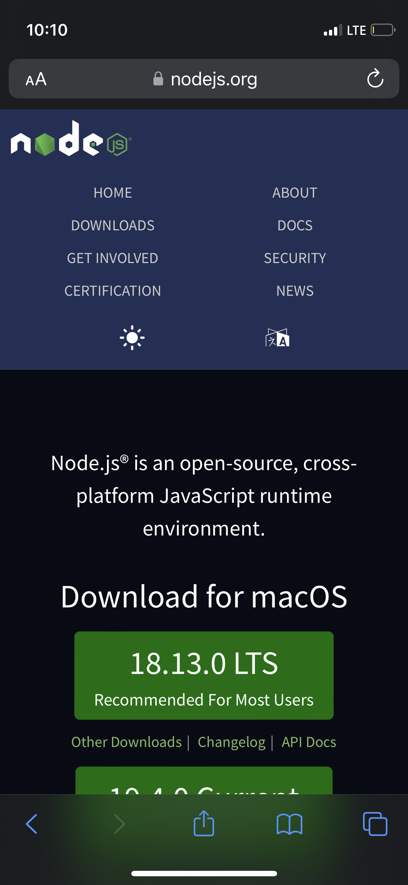
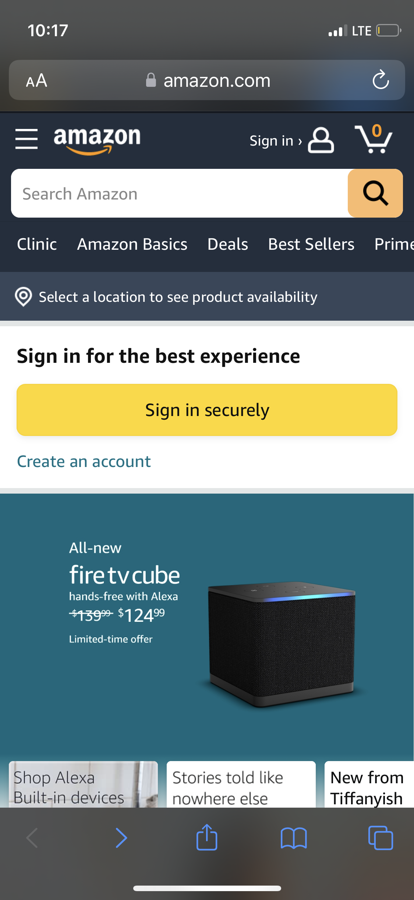
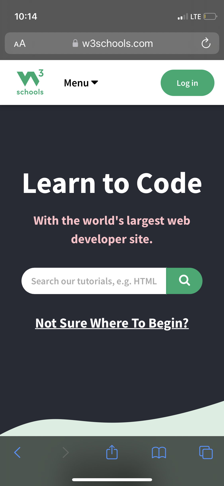

Design Principles Document
Richard Gibbons
Visual Alignment
Node JS
NodeJS The node JS website uses the principle of visual alignment. You can especially see this in the top of the page, where all of the links line up in two columns. Throughout the page things are either lined up right in the middle or in symetrical pairs.
Color
Amazon
Amazon The Amazon website uses color very effectively. They have a nuetral but easily identifiable color scheme. One thing that stood out to me, is how many shades of colors they use in their color scheme. I usually imagine their dark blue and orange, but they include varying shades of yellows and blues that work well with eachother.
Emphasis
W3 Schools
W3Schools The w3 schools website uses emphasis to help draw your eyes to the important part of their page. Because the site is focused on the sharing of information, they draw the eye to the search bar and have bolded and underlined the "Don't know where to start?" so that beginers have an obvious place to go.